Physical System Basics
游戏中的物理
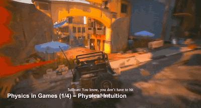
和游戏玩法息息相关
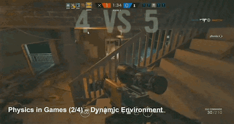
《彩虹六号》
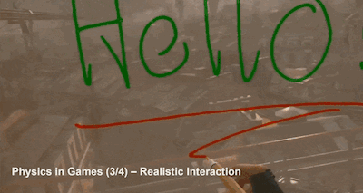
Half-Life Alyx（
VR 游戏最严厉的父亲）
粒子、烟、流体、布料等的运动和物理密切联系。

注意
这里介绍的物理系统和先前在渲染部分中介绍的 PBR 中的「物理」是两个概念。后者特指物理中的光学特征。
Physics Actors and Shapes
如下图所示，左图是渲染后的虚拟世界；而右图是物理世界，游戏的逻辑和模拟往往在这之上运行的。
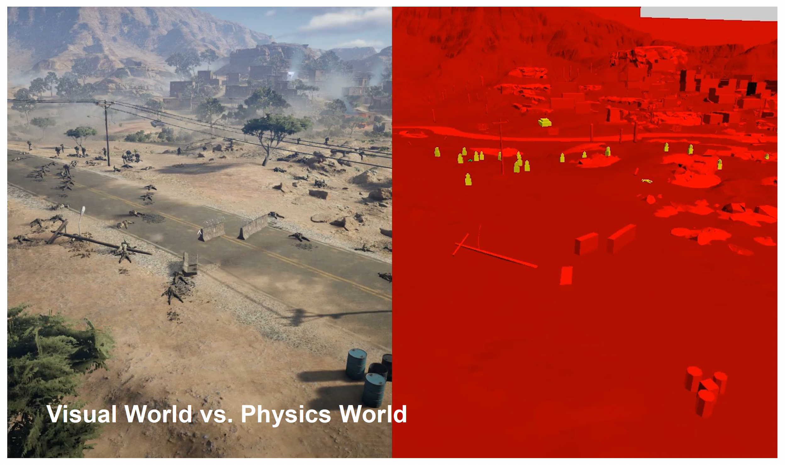
Actors
物理世界中的对象通常称为参与者(actor)。参与者可分为：
-
静态(static)参与者：静止不动的物体，比如挡板等，在游戏中的占比是最大的
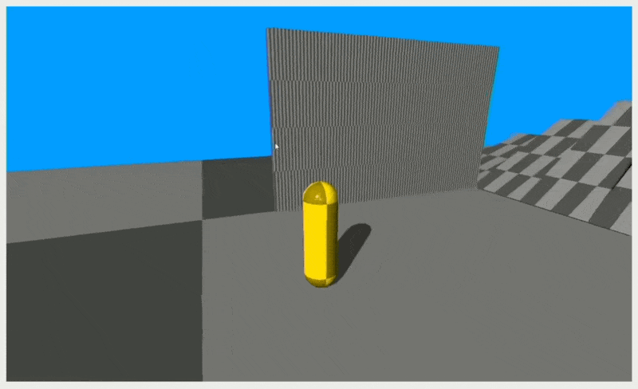
-
动态(dynamic)参与者：符合物理原理的物体，比如下图的箱子会因重力和摩擦力的作用在斜面上运动
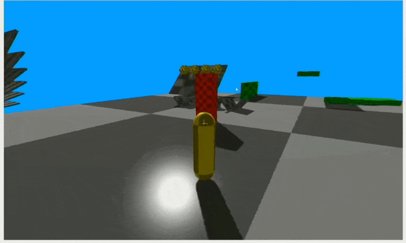
-
触发器(trigger)：
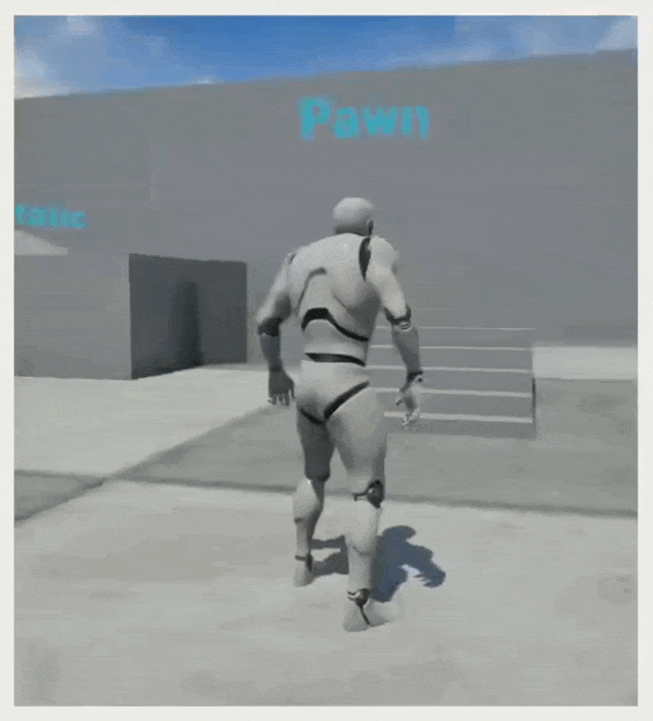
- 像静态参与者那样不会移动，但不会阻塞
- 和游戏逻辑高度相关，会触发消息（或事件），用于通知参与者进入/退出
-
运动学(kinematic)参与者：根据游戏玩法逻辑直接控制物体运动，可以无视物理定律
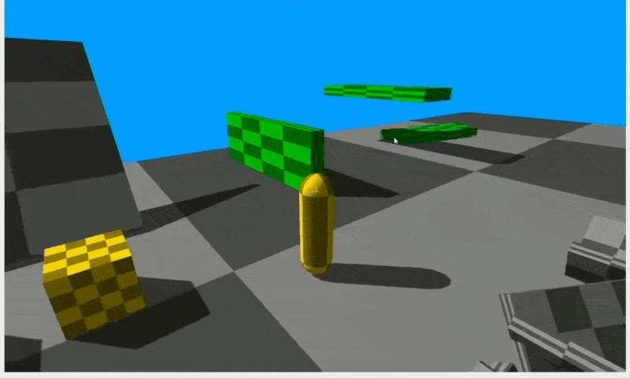
-
但违背物理定律会给游戏引来很多麻烦
例子
被野兽一顶直接飞天了...
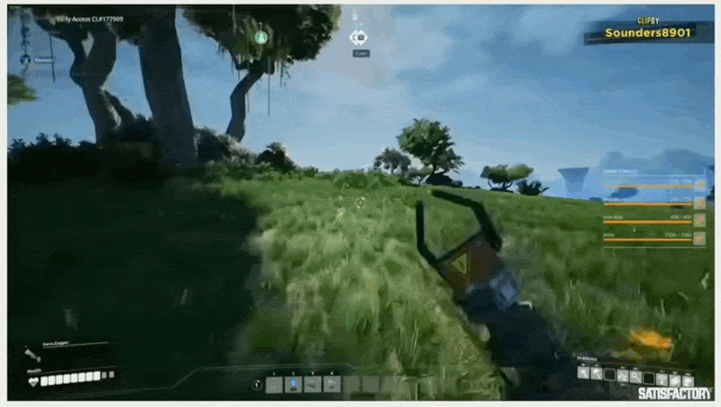
让笔者想起玩《模拟山羊》的时候了hh
-
Shapes
参与者的形状各异，需要根据实际情况选择合适的形状，否则会影响到游戏性能，甚至产生各种奇怪的 bug。常见的形状有：
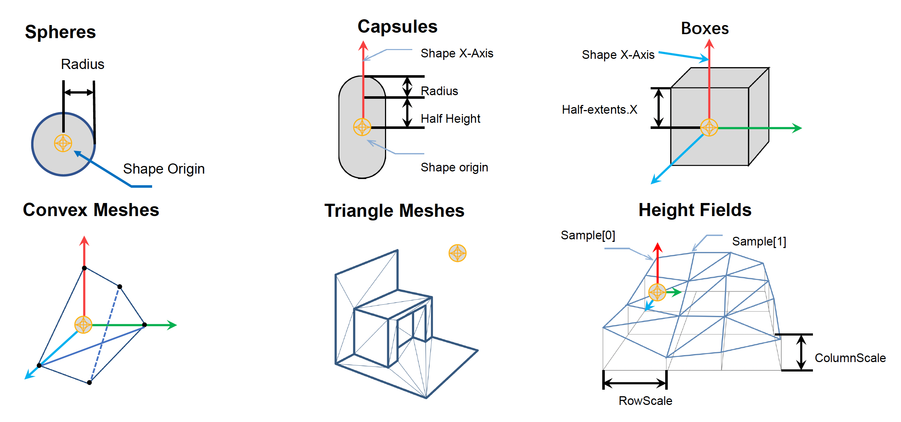
-
球形(spheres)
- 像球类运动天然适合用球形表示
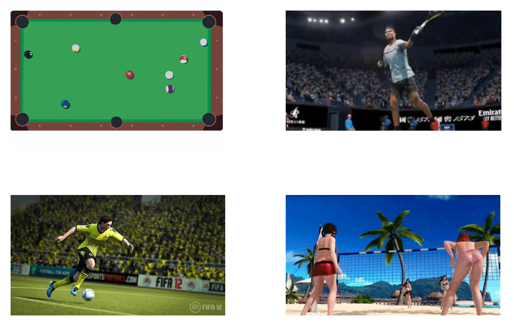
-
胶囊状(capsules)
- 很多游戏用胶囊表示一个角色，角色恰好能被一个胶囊包裹起来
- 但这种包裹往往是近似的
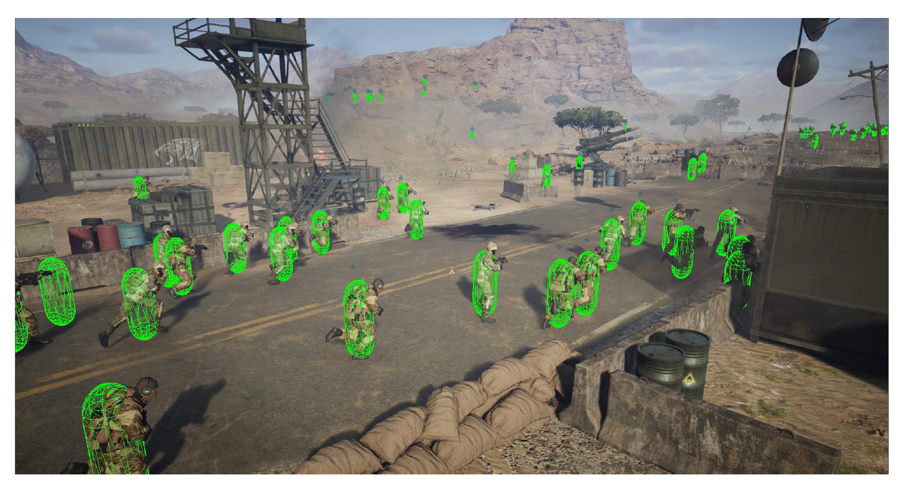
-
盒形(boxes)（正方体/长方体）
- 适合精度要求不高的情形

-
凸网格(convex meshes)：
- 封闭，不能有洞
- 凸包：任意一个面做无限延伸都不会其他任何面相交
- 能表达更多样更复杂的形状（比如图中的可破坏队形）

-
三角形网格(triangle meshes)
- 要求物体是密闭的，且是静态的（因为动态物体势必涉及碰撞和求交运算，事情会变得很复杂）

-
高度场(height fields)
- 更适合表达地形（用盒形或凸包表示的成本很大）

使用物理形状包裹物体的原则
- 近似：不需要包裹得很精细
- 简单：偏好简单形状（如有可能请避免使用三角形网格）、最少的形状
形状有很多属性，包括（实际上有些引擎还会给出更多属性）：
-
质量(mass)和密度(density)：
- 在物理系统中通常假设每个参与者是质量均匀的，这样的物体会有好几个平衡点；而质量不均匀的物体只有一个平衡点（比如不倒翁）
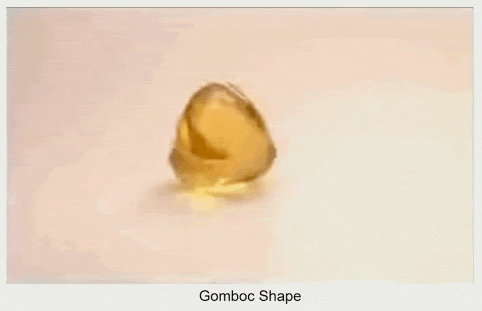
-
质心(center of mass)：
- 决定了物体的稳定性
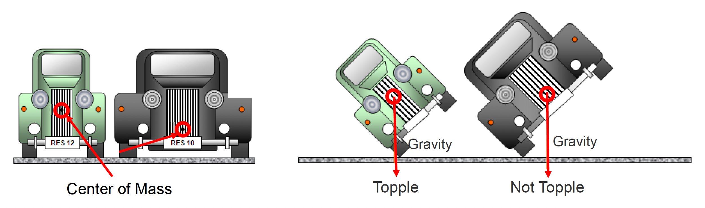
-
摩擦力(friction)和弹性(restitution)：
- 这两个属性由物理材质(physical materials)定义
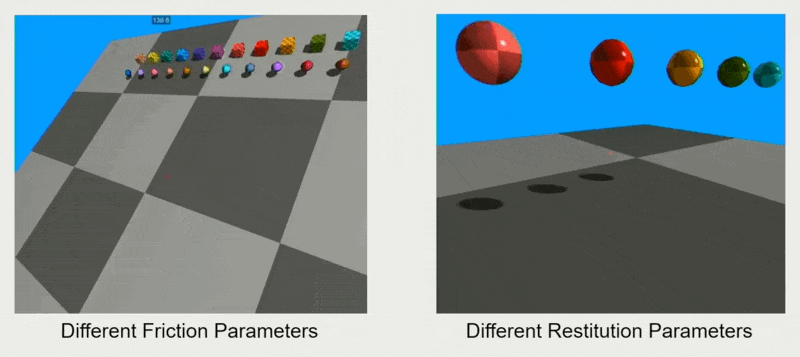
Forces
- 只有当力(force)作用在（动态）物体上改变加速度时，才能影响到它们的移动
-
常见的力有重力(gravity)、拉力(drag)、摩擦力(friction)等

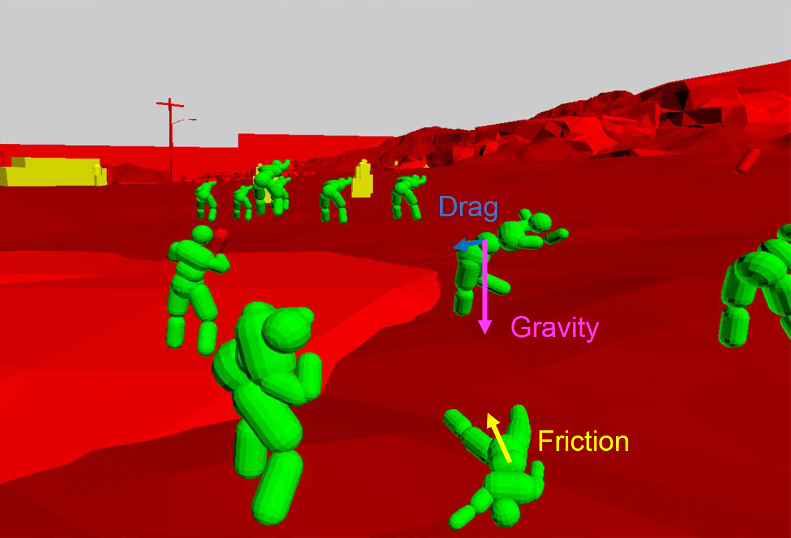
-
还可以通过施加冲量(impulse)改变参与者的加速度，比如车辆冲撞、爆炸等


Movements
物理基础：牛顿运动定律
-
牛顿第一定律（无外力作用）
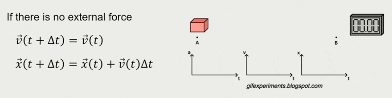
-
牛顿第二定律（有外力作用）

恒力(constant force)作用下的移动：
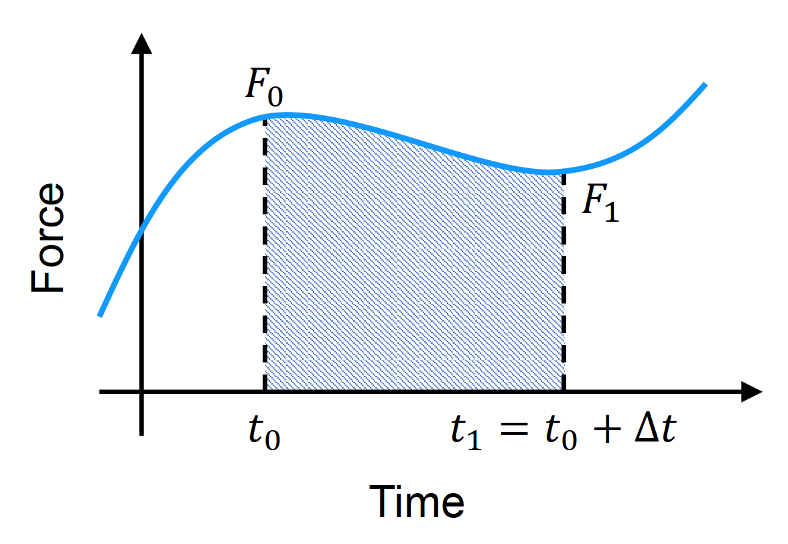
变力(varying force)作用下的移动：
现在考虑地球绕太阳公转这样一个相对简单的运动的例子（假设是圆形轨道）。我们可以用位置、朝向、线速度和角速度这四个量来表示地球在任意时刻 \(t\) 下的运动：

而要在游戏中模拟这样一个圆周运动，可以这样做：
- 已知 \(t\) 时刻下位置为 \(\vec{x}(t)\)，线速度为 \(\vec{v}(t) = \dfrac{d\vec{x}(t)}{dt}\)
- 在模拟步中，令时间步大小为 \(\Delta t\)，我们要计算 \(\vec{x}(t + \Delta t), \vec{v}(t + \Delta t)\)
-
需要沿时间做积分：\(\vec{x}(t_1) = \vec{x}(t_0) + \int_{t_0}^{t_1} \vec{v}(t) dt\)
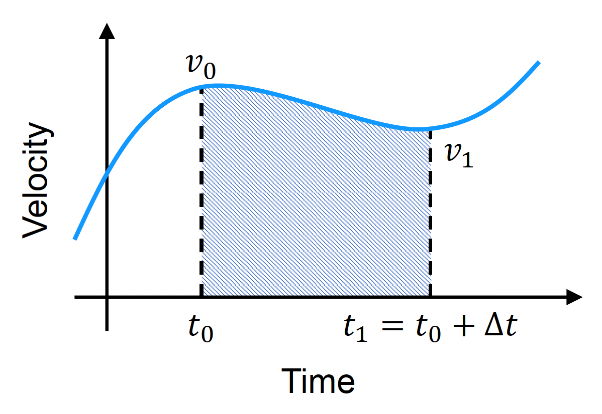
这个积分的求解需要用到欧拉法(Euler's method)：
-
显式（正向）欧拉法：最简单的估计，假设力在时间步内是恒定的
\[ \begin{cases} \vec{v}(t_{1}) = \vec{v}(t_{0}) + M^{-1}\textcolor{cornflowerblue}{\vec{F}(t_{0})}\Delta t \\ \vec{x}(t_{1}) = \vec{x}(t_{0}) + \textcolor{cornflowerblue}{\vec{v}(t_{0})}\Delta t \end{cases} \]其中标蓝的量表示当前状态，它们都是已知的。
例子：粒子的圆周运动

如果时间步大小过大，结果会「爆炸」！
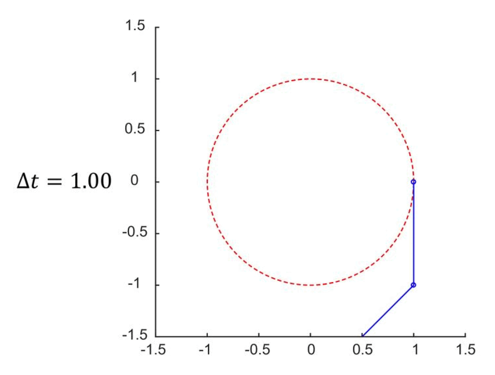
- 优点：计算简单高效
- 缺点：
- 不稳定
- 能量随时间增长
-
隐式（反向）欧拉法
\[ \begin{cases} \vec{v}(t_{1}) = \vec{v}(t_{0}) + M^{-1}\textcolor{red}{\vec{F}(t_{1})}\Delta t \\ \vec{x}(t_{1}) = \vec{x}(t_{0}) + \textcolor{red}{\vec{v}(t_{1})}\Delta t \end{cases} \]其中标红的量是未来状态，它们是未知的。
-
隐式欧拉法的结果是螺旋状的

-
优点：无条件稳定
- 缺点：
- 求解成本高
- 难以应对非线性问题
- 能量随时间衰减
-
-
半隐式(semi-implicit)欧拉法
\[ \begin{cases} \vec{v}(t_{1}) = \vec{v}(t_{0}) + M^{-1}\textcolor{cornflowerblue}{\vec{F}(t_{0})}\Delta t \\ \vec{x}(t_{1}) = \vec{x}(t_{0}) + \textcolor{red}{\vec{v}(t_{1})}\Delta t \end{cases} \]同样地，标蓝量为当前状态，标红量为未来状态。
-
若时间步较小，结果近似为一个圆
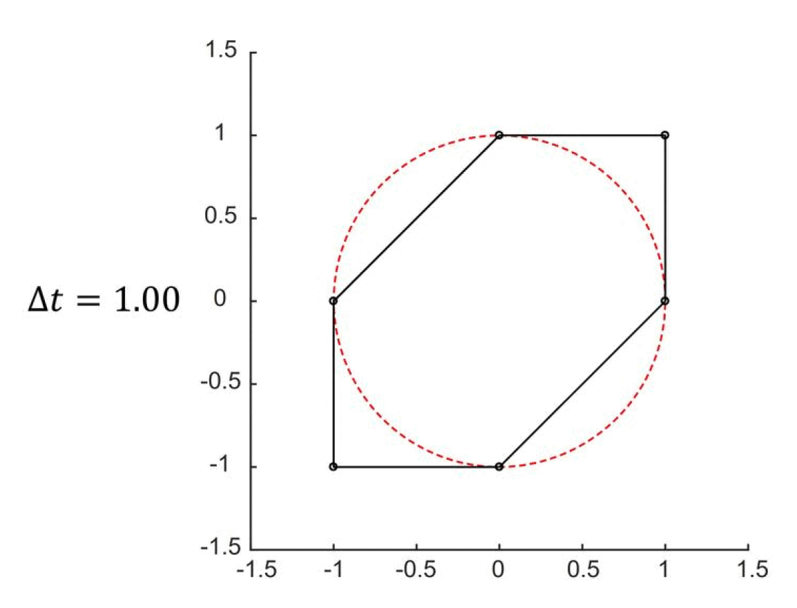
-
不仅兼具前两种方法的优点，还确保能量不会随时间变化而增长或衰减，因此更适合用于游戏开发中
- 但它还是有一点小问题的：在简谐运动、圆周运动等涉及到三角函数的运动中，通过该方法积分得到的周期会比实际周期略长一些，因而产生一个小的相位差
-
Rigid Body Dynamics
在之前介绍的内容中，我们假设任何物体都可用一个质点表示，涉及的物理量包括了：
- 位置 \(\vec{x}\)
- 线速度(linear velocity) \(\vec{v} = \dfrac{d\vec{x}}{dt}\)
- 加速度(acceleration) \(\vec{a} = \dfrac{d\vec{v}}{dt} = \dfrac{d^2\vec{x}}{dt^2}\)
- 质量 \(M\)
- 动量(momentum) \(\vec{p} = M\vec{v}\)
- 力 \(\vec{F} = \dfrac{d\vec{p}}{dt} = M \vec{a}\)
但大多数物体都有自己的形状，除了上述量（线性值）外，还得考虑自身的旋转（角值(angular value)），包括：
-
朝向(orientation) \(\bm{R}\)：形式可以是
- 矩阵 \(\bm{R}(t) = \begin{bmatrix}\textcolor{red}{r_{xx}} & \textcolor{green}{r_{yx}} & \textcolor{cornflowerblue}{r_{zx}} \\ \textcolor{red}{r_{xy}} & \textcolor{green}{r_{yy}} & \textcolor{cornflowerblue}{r_{zy}} \\ \textcolor{red}{r_{xz}} & \textcolor{green}{r_{yz}} & \textcolor{cornflowerblue}{r_{zz}}\end{bmatrix}\)
- 四元数 \(q = \begin{bmatrix}s & \vec{v}\end{bmatrix}\)

-
角速度(angular velocity) \(\vec{\omega}\)：方向为旋转轴的方向
\[ \begin{aligned} \|\vec{\omega}\| &= \frac{d\theta}{dt} \\ \vec{\omega} &= \frac{\vec{v} \times \vec{r}}{\|\vec{r}\|^{2}} \end{aligned} \]其中 \(\theta\) 为用弧度表示的旋转角
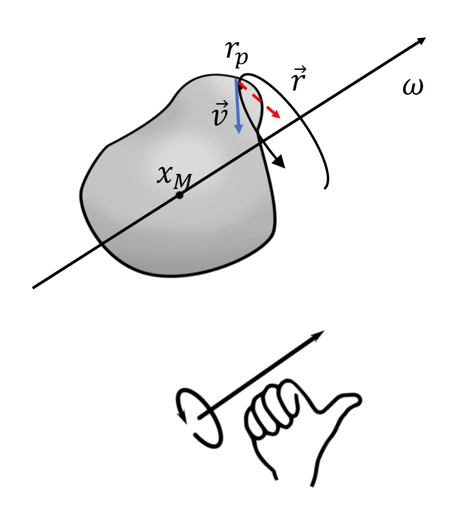
-
角加速度(angular acceleration) \(\vec{\alpha}\)
\[ \vec{\alpha} = \frac{d\vec{\omega}}{dt} = \frac{\vec{a} \times \vec{r}}{\|\vec{r}\|^{2}} \] -
惯性张量(inertia tensor)/转动惯量(rotational inertia) \(\bm{I}\)：描述了刚体的质量分布
\[ \bm{I} = \bm{R} \cdot \bm{I}_0 \cdot \bm{R}^\top \]
- 总质量：\(M = m_1 + m_2\)
- 质心：\(CoM = \dfrac{m_1}{M}(x_1, y_1, z_1) + \dfrac{m_2}{M}(x_2, y_2, z_2)\)
-
初始惯性张量：
\[ I_{0} = \begin{bmatrix} m_{1}(y_{1}^{2} + z_{1}^{2}) + m_{2}(y_{2}^{2} + z_{2}^{2}) & -m_{1}x_{1}y_{1} - m_{2}x_{2}y_{2} & -m_{1}x_{1}z_{1} - m_{2}x_{2}z_{2} \\ -m_{1}y_{1}x_{1} - m_{2}y_{2}x_{2} & m_{1}(x_{1}^{2} + z_{1}^{2}) + m_{2}(x_{2}^{2} + z_{2}^{2}) & -m_{1}y_{1}z_{1} - m_{2}y_{2}z_{2} \\ -m_{1}z_{1}x_{1} - m_{2}z_{2}x_{2} & -m_{1}z_{1}y_{1} - m_{2}z_{2}y_{2} & m_{1}(x_{1}^{2} + y_{1}^{2}) + m_{2}(x_{2}^{2} + y_{2}^{2}) \end{bmatrix} \]
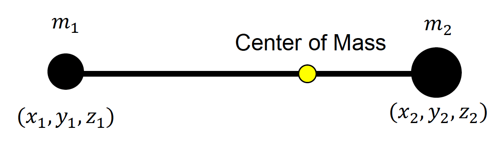
-
角动量(angular momentum) \(\vec{L} = \bm{I} \vec{\omega}\)
- 角动量守恒是一个能被证明的定理
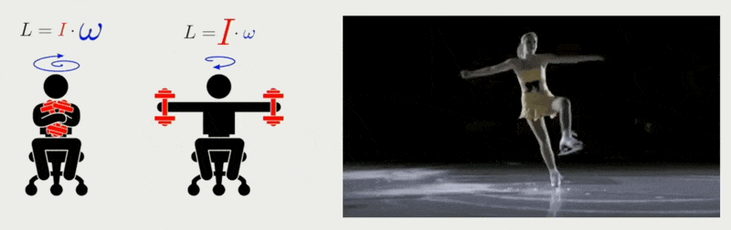
-
扭矩(torque) \(\vec{\tau}\)
\[ \vec{\tau} = \vec{r} \times \vec{F} = \frac{d\vec{L}}{dt} \]其中 \(\vec{F}\) 表示施加在刚体位置 \(\vec{r}\) 上的外力

以上便是刚体动力学(rigid body dynamics)的内容了！
应用：台球(billiard)动力学
尽管我们已经了解了刚体动力学的基本概念，但台球游戏中的物理仍然很复杂。
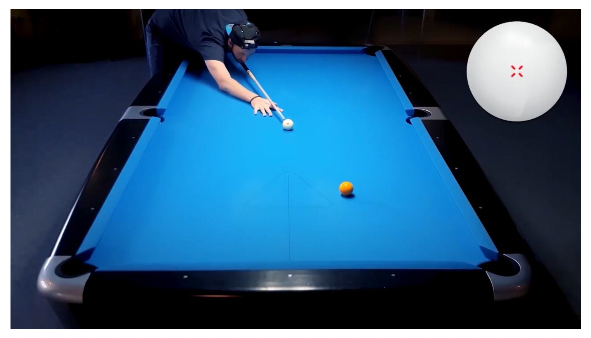

这里举一个简单的例子：用球杆侧面打击球
- 摩擦力冲量：\(\vec{p}_F = \int \vec{F} dt = m \vec{v}_x\)
- 压力冲量：\(\vec{p}_N = \int \vec{N} dt = m \vec{v}_y\)
- 球角动量：\(\vec{L}_b = \bm{I}_b \vec{\omega} = \vec{p}_F \times \vec{r}_F\)
- 球线速度：\(\vec{v} = \vec{v}_x + \vec{v}_y\)
Collision Detection
无碰撞检测
没有碰撞检测的时候，参与者之间看起来彼此没有任何关系，像幽灵般穿越彼此，看起来极不真实。
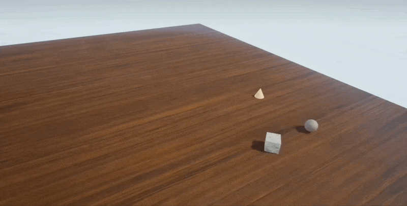
要想在物理世界中表达物体之间的相互作用，碰撞检测(collision detection)是必不可少的一项技术。它一般分为以下两个阶段：

- 广阶段(broad phase)
- 窄阶段(narrow phase)
Broad Phase
广阶段的目标是找到相交的刚体 AABBs，这表明有可能的重叠刚体对，实现方法有：
-
空间划分(space partitioning)，比如边界体积层次(boundary volume hierarchy, BVH)树；下面列举各种 BVH 树的构建方式

- 优点：环境动态变化时，更新成本很低
例子
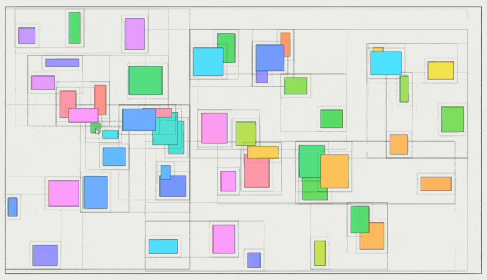
-
排序和清理
-
排序阶段（初始化）：对于每个轴
- 初始化场景时，沿着每个轴对 AABBs 的边界排序
- 沿着每个轴检查 AABBs 的边界
- \(A_{\max} \ge B_{\min}\) 意味着 \(A, B\) 之间可能有重叠

-
清理阶段（更新）
-
只检查边界的交换
- 时间一致性(temporal coherence)
- 帧与帧之间的局部步骤
-
交换 min 和 max 意味着从重叠集合中增加/删除潜在的重叠
- 交换 min 和 min，或者 max 和 max 则不会影响重叠集合

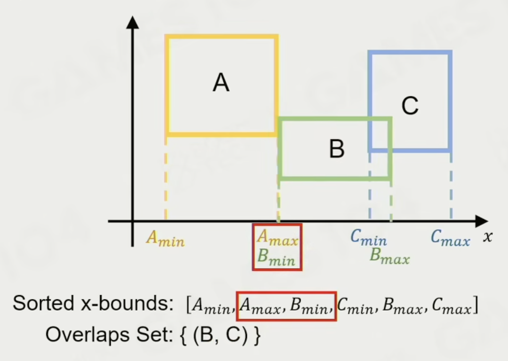
-
-
优点：效率非常高（因为大多数物体都是静态的，排好序后也只需调整很少的数字）
-
Narrow Phase
窄阶段的目标是精确检测重叠情况，生成接触信息。接触信息(contact information)包括：
- 接触流形(contact manifold)：用一组接触点近似
- 接触法线(contact normal)
- 穿透深度(penetration depth)

下面给出窄阶段常用的实现方法。
-
基本形状相交测试(basic shape intersection test)
-
球-球测试
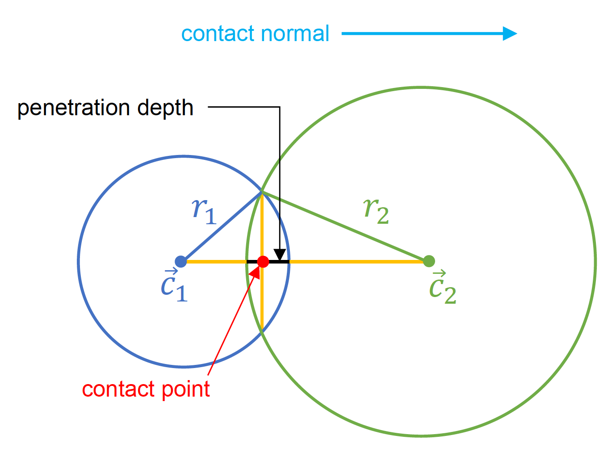
- 重叠条件：\(|\vec{c}_2 - \vec{c}_1| - r_1 - r_2 \le 0\)
- 接触信息：
- 接触法线：\((\vec{c}_2 - \vec{c}_1) / |\vec{c}_2 - \vec{c}_1|\)
- 穿透深度：\(|\vec{c}_2 - \vec{c}_1| - r_1 - r_2\)
-
球-胶囊测试
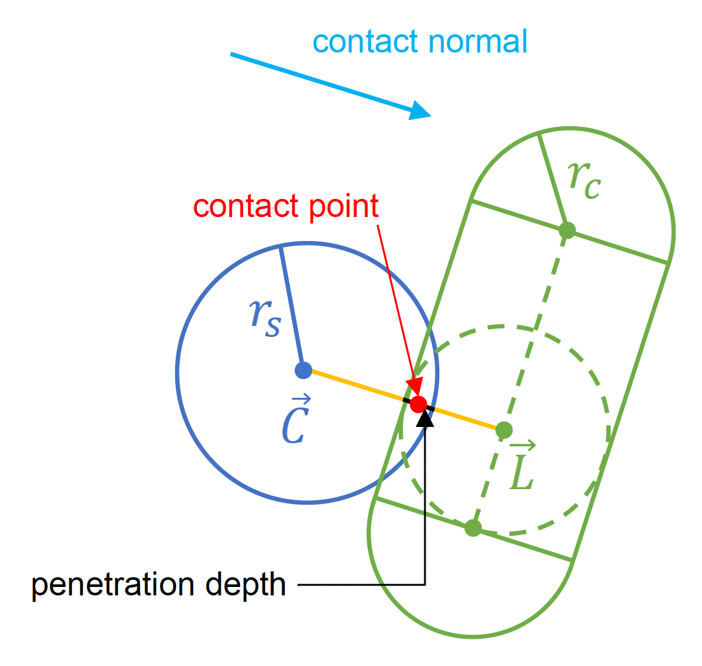
其中 \(\vec{L}\) 为在内部胶囊段中离圆最近的点
- 重叠条件：\(|\vec{C} - \vec{L}| - r_S - r_C \le 0\)
- 接触信息：
- 接触法线：\((\vec{C} - \vec{L}) / |\vec{C} - \vec{L}|\)
- 穿透深度：\(|\vec{C} - \vec{L}| - r_S - r_C\)
-
胶囊-胶囊测试
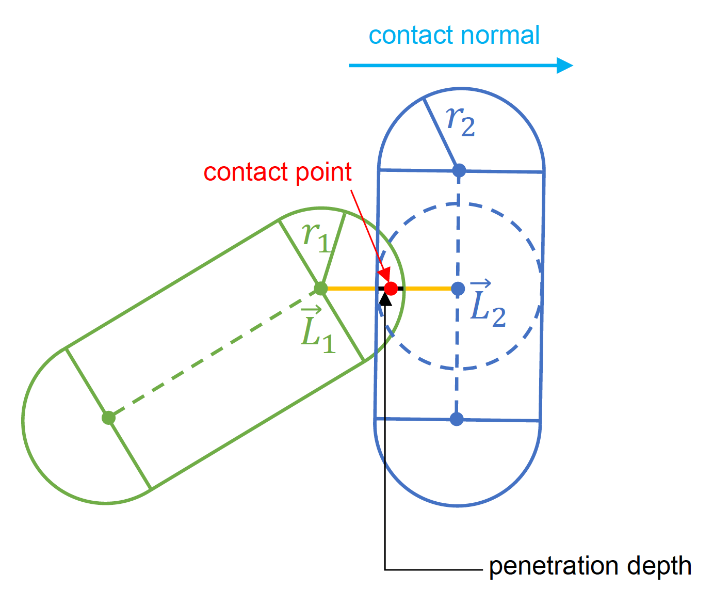
其中 \(\vec{L}_1, \vec{L}_2\) 为在两个段之间最近的点
- 重叠条件：\(|\vec{L}_2 - \vec{L}_1| - r_1 - r_2 \le 0\)
- 接触信息：
- 接触法线：\((\vec{L}_2 - \vec{L}_1) / |\vec{L}_2 - \vec{L}_1|\)
- 穿透深度：\(|\vec{L}_2 - \vec{L}_1| - r_1 - r_2\)
-
-
基于闵可夫斯基差的方法(Minkowski difference-based methods)
-
闵可夫斯基和：来自 A 的点 + 来自 B 的点 = 这两个点的闵可夫斯基和
\[ A \oplus B = \{\vec{a} + \vec{b} : \vec{a} \in A, \vec{B} \in B\} \]例子
\[ \begin{aligned} &A: \{ \vec{a}_1, \vec{a}_2 \} \\ &B: \{ \vec{b}_1, \vec{b}_2, \vec{b}_3 \} \\ &A \oplus B = \{ \vec{a}_1 + \vec{b}_1, \vec{a}_1 + \vec{b}_2, \vec{a}_1 + \vec{b}_3, \vec{a}_2 + \vec{b}_1, \vec{a}_2 + \vec{b}_2, \vec{a}_2 + \vec{b}_3 \} \end{aligned} \]
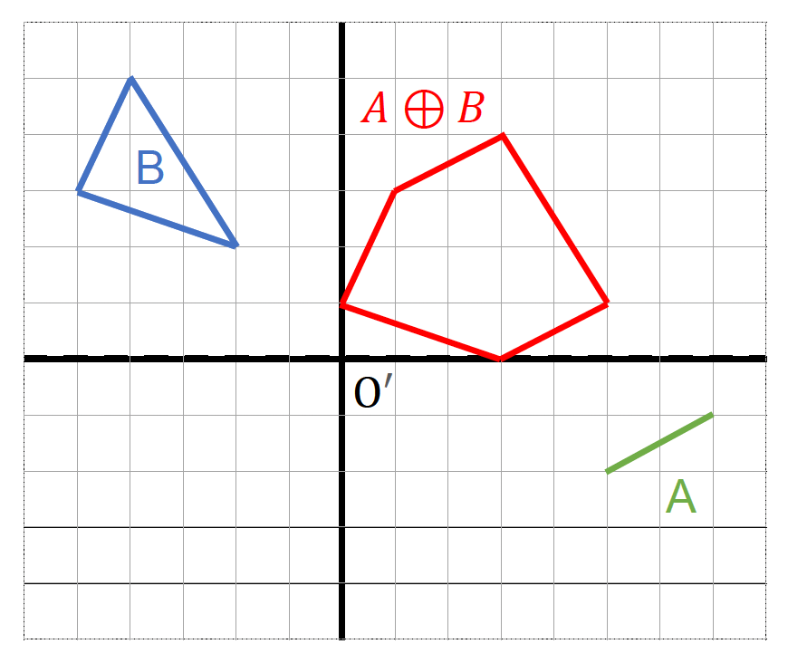

-
关于凸多边形(convex polygon)

- 定理：若 \(A, B\) 是凸多边形，那么 \(A \oplus B\) 也是凸多边形
- \(A \oplus B\) 的顶点是 \(A, B\) 的顶点和
-
-
闵可夫斯基差：来自 A 的点 - 来自 B 的点 = 这两个点的闵可夫斯基差
\[ A \ominus B = \{\vec{a} - \vec{b} : \vec{a} \in A, \vec{B} \in B\} \]-
也可以看成 \(A\) 和镜像的 \(B\) 的闵可夫斯基和
\[ A \ominus B = A \oplus (-B) \]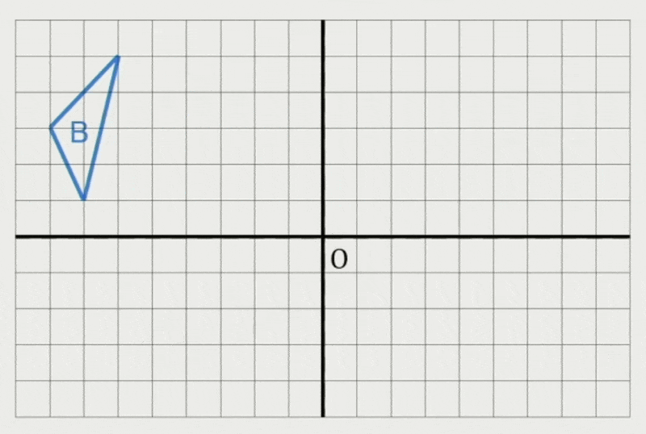
-
若 \(A, B\) 相交，那么原点一定在它们的闵可夫斯基差的内部

-
-
GJK 算法：
- 确定迭代方向
- 检查原点是否在单纯形(simplex)内
- 在单纯形内找到离原点最近的点
- 若最近距离还能减少，则继续迭代
- 从单纯形中移除对新最近点没有贡献的点
- 寻找支持点 \(\vec{p}_A, \vec{p}_B\)
- 在闵可夫斯基差上向迭代单纯形添加新点 \(\vec{p}_A - \vec{p}_B\)
例子
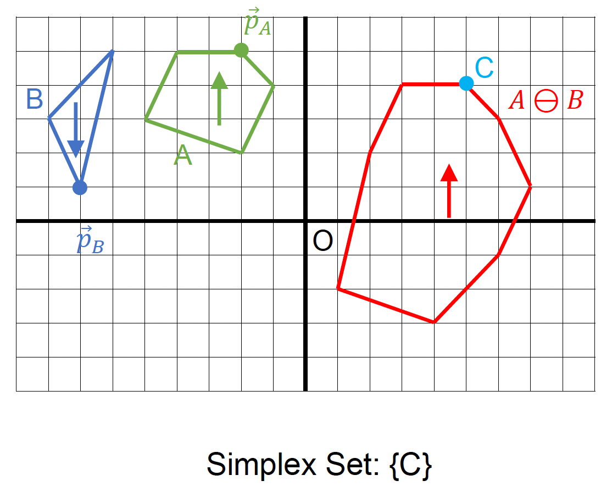


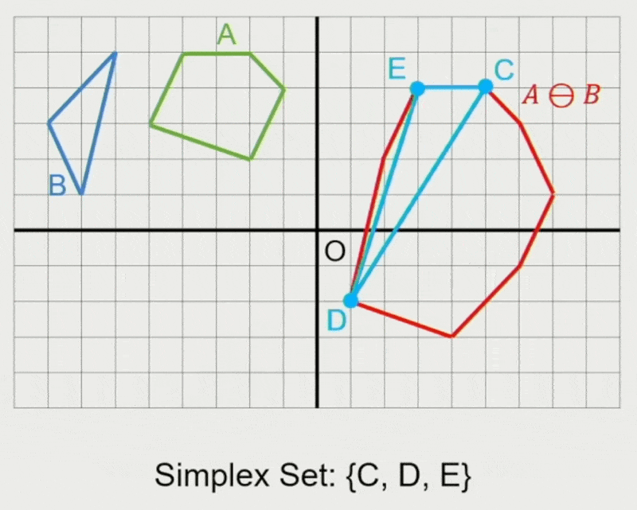
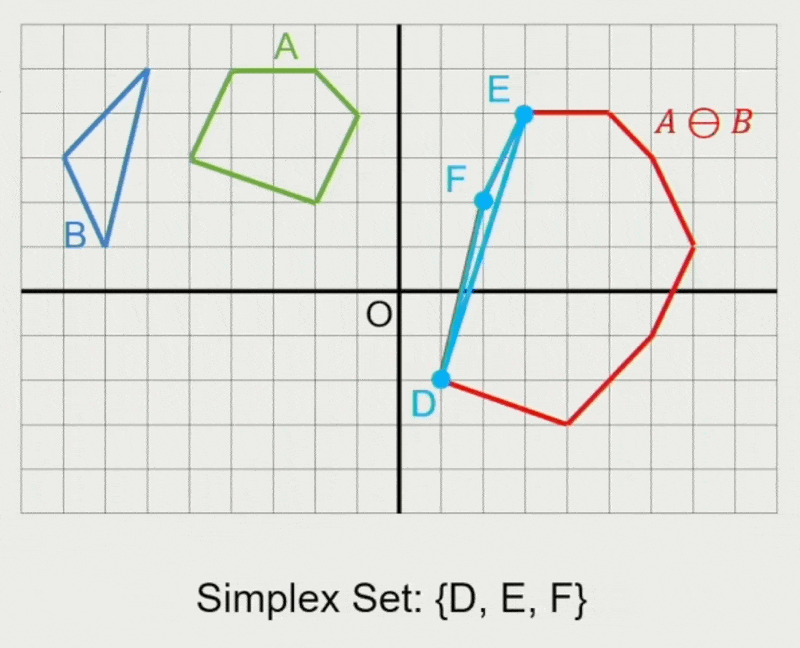


- 确定迭代方向
-
-
分离轴定理(seperating axis theorem, SAT)
-
由于凸性(convexity)，任何边都可用于分离两个凸多边形

-
另一种理解：在 2D 情况下，一定能找到一条轴，使得两个多边形的顶点在这条轴上的投影是分离的（两个投影顶点集合没有交集）
-
一定要检查所有的边，直到找到一条分离轴

-
分离标准：\(\textcolor{red}{d} = \vec{n} \cdot (\textcolor{yellowgreen}{\vec{s}} - \textcolor{cornflowerblue}{\vec{p}})\)，穿透深度就是 \(|d|\)

-
SAT-2D 算法
- 对 A 的每条边检查 B 的每个顶点
- 对 B 的每条边检查 A 的每个顶点

例子
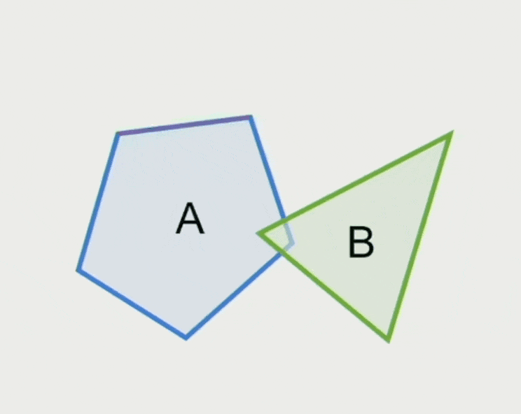
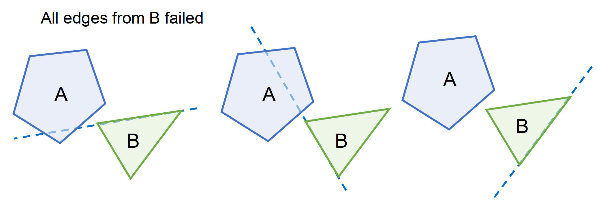
-
SAT-2D 算法的优化：缓存上一个分离轴
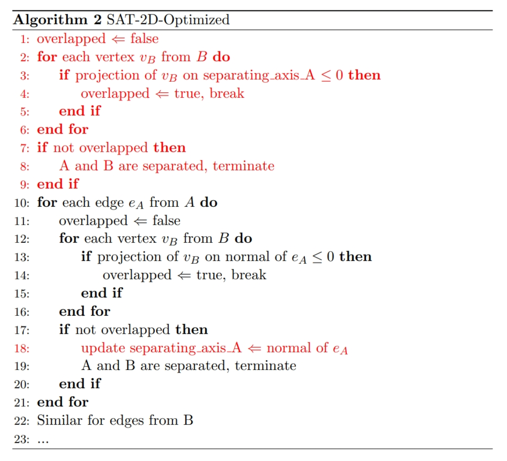
-
SAT-3D
- 检查 A 的每个面和 B 的每个顶点 -> 分离轴为 A 的面法线
- 检查 B 的每个面和 A 的每个顶点 -> 分离轴为 B 的面法线
- 检查 A 的每条边和 B 的每条边 -> 分离轴为两条边的叉积


-
Collision Resolution
有了精确检测碰撞和获取碰撞信息的方法后，下一步就要来解决碰撞问题。
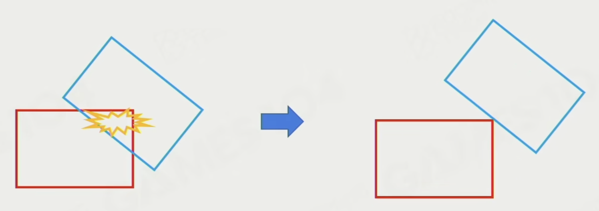
Applying Penalty Force
第一种方法是向发生碰撞的两个物体各自施加一个惩罚力(penalty force)，将它们推开来。问题在于两个物体会迅速远离，看起来很假，因此现代引擎中很少会用这种方法。
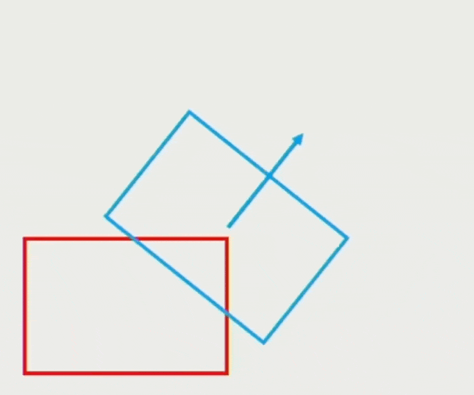
Solving Constraints
目前常用的方法是将这个力学问题转为数学上的约束问题，即拉格朗日力学(Lagrangian mechanics)。
- 碰撞约束包括非穿透(non-penetration)、弹性(restitution)和摩擦力(friction)
- 迭代求解
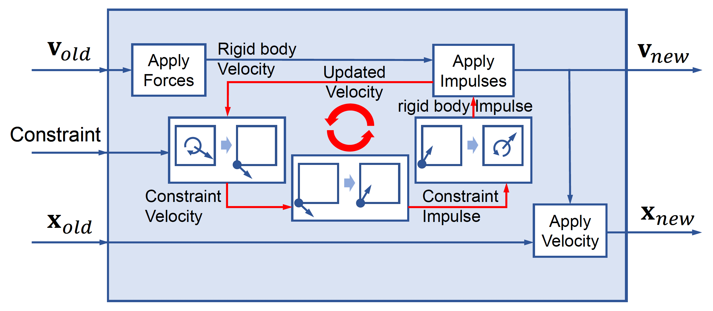
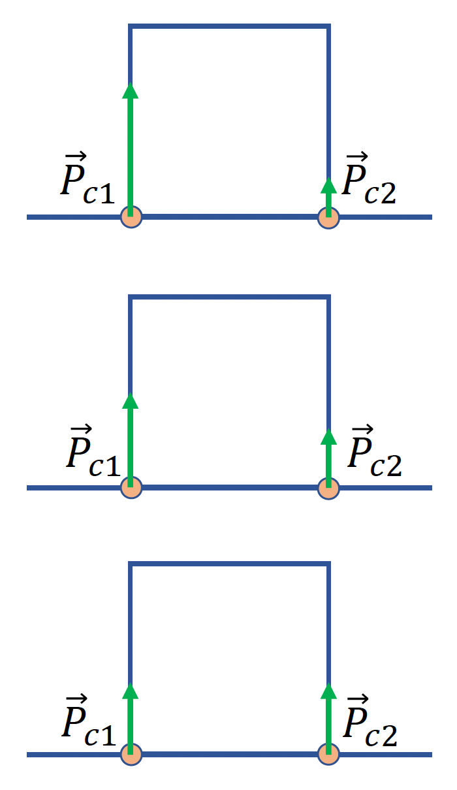
先只考虑求解有关速度的约束：
- 方法
- 顺序冲量(sequential impulse)
- 半隐式积分(semi-implicit integration)
- 非线性高斯-赛德尔方法(non-linear Gaussian-Seidel method)
- 特点
- 在很多情况下快速且稳定
- 常用于多数物理引擎
Scene Query
场景查询(scene query)是一种用于检测物体与场景几何体之间空间关系的机制。
Raycast
- 射线投射(raycast)是指将用户定义的射线与整个场景相交
- 可以定义点、方向、距离和查询模式
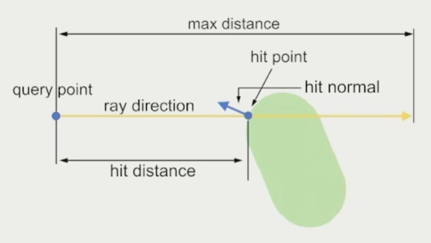
例子
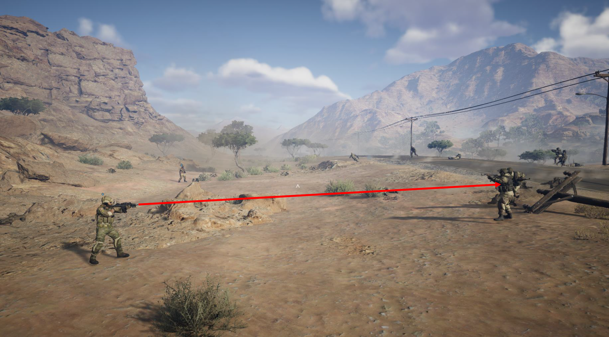
射线投射一般分为以下三类：
-
多命中(multiple hits)：寻找所有阻塞命中
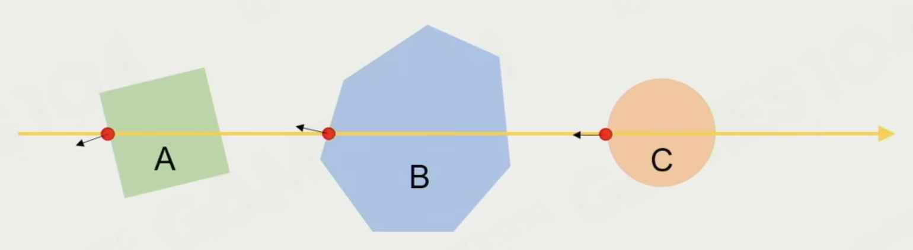
-
最近命中(closest hit)：寻找所有阻塞命中，选择距离最小的一个

-
任意命中(any hit)：任何遇到的命中都行
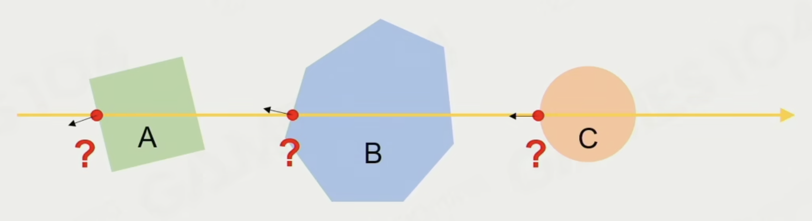
Sweep
扫掠(sweep)在几何上类似于射线投射，但可以定义形状和姿态，包括盒子、球体、胶囊和凸形等。
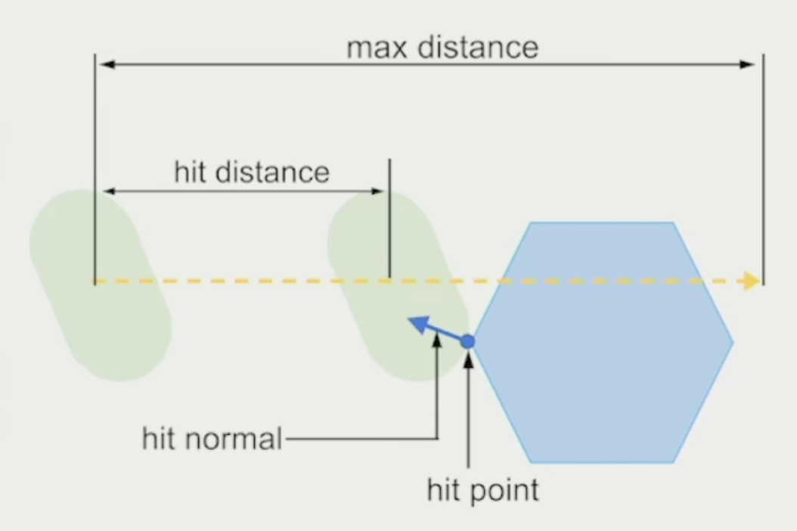

例子

Overlap
重叠(overlap)查询是指在指定形状包围的区域中搜索场景中的任何重叠对象。指定形状可以是矩形、球体、胶囊和凸形等。

例子

Collision Groups
-
参与者具有碰撞组属性
- 玩家：棋子(pawn)（即可操控角色）
- 障碍物：静态
- 可移动箱子：动态
- 触发框：触发器
-
可以通过场景查询来过滤碰撞组
- 玩家移动查询碰撞组：（棋子，静态，动态）
- 触发器查询碰撞组：（棋子）
Efficiency, Accuracy, and Determinism
Simulation Optimization
物理世界中会把物体分为一个个的岛屿(island)，可简单理解成为物体分组。

- 之所以这么做，是因为要模拟和计算所有的刚体需花费大量资源
-
因此如果一段时间内属于某个岛屿的刚体没有移动，那该岛屿可进入休眠状态，直到再次受到外力作用
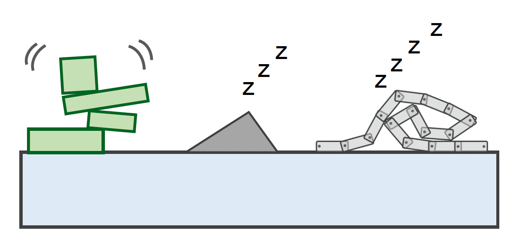
Continuous Collision Detection
反面教材
角色高速移动时，他的头直接卡在墙中...
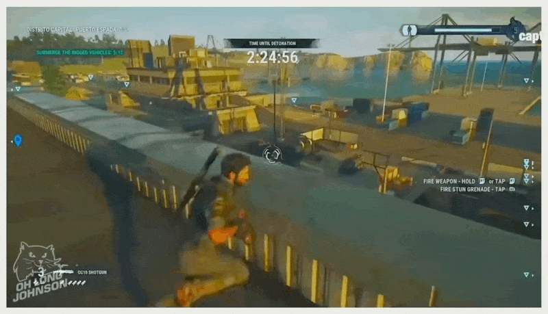
造成这一 bug 的原因就是障碍物太薄 + 角色移动太快，碰撞检测的结果是两者之间没有任何交集，因而导致角色的穿墙。这种现象被称为隧道效应(tunneling)。

-
最简单的方法是把墙体做厚
-
碰撞时间（time-of-impact, TOI）：一种保守的推进方式
- 估算 A 和 B 不会碰撞的“安全”时间子步
- 将 A 和 B 向前推进这一段“安全”子步
- 重复上述步骤，直到两者距离低于某个阈值

Deterministic Simulation
多人游戏的挑战
- 游戏中的物理受游戏玩法影响
- 即便是小错误也会产生蝴蝶效应
- 同步状态需要足够的带宽
- 同步输入需要确定性的模拟
非确定性模拟的例子
左右两幅图是不同计算机上的相同输入，但模拟结果是不一致的
相同的旧状态 + 相同的输入 = 相同的新状态。要保证模拟的确定性，需满足以下要求：
- 物理模拟的步长是固定的
- 模拟求解的迭代顺序是一致的
- 浮点数一致性
例子
绿色链是解析解，而红色链是模拟结果，可以看到这两个解之间是非常不稳定的。
确定性模拟的例子
现代物理引擎实际上花了非常多的力气来解决确定性的问题，比如 UE 的 Chaos。之所以投入这么多，是因为一旦能保证确定性，多个客户端之间就没有必要同步很多复杂的物理状态，只需有相同的输入就能确保这些客户端能看到相同的物理世界。
到目前为止，物理对游戏而言相当重要，也是困难的一件事，不少 3A 大作会在物理方面出一些 bug。
Bug 合订本
评论区